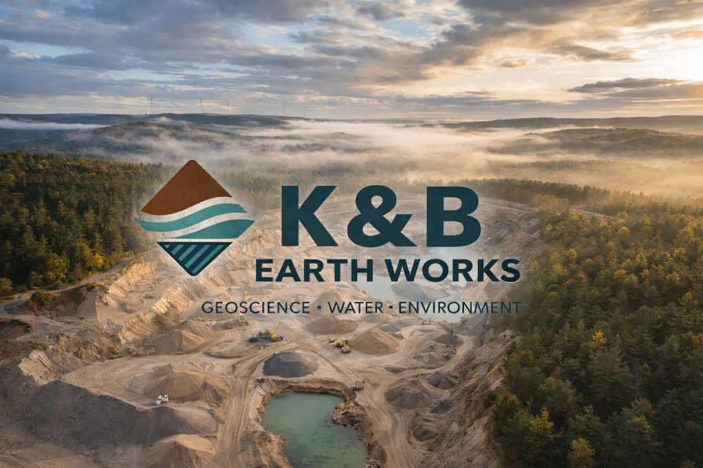

K&B EARTH WORKS
Geoscience · Water · Environment
Bureau d'études en géosciences, environnement et ingénierie
Casablanca — Maroc
NEW Découvrez nos projets Publication scientifique & réalisations
Geoscience · Water · Environment
Bureau d'études en géosciences, environnement et ingénierie
Casablanca — Maroc
NEW Découvrez nos projets Publication scientifique & réalisationsQui sommes-nous
K&B Earth Works SARL est un bureau d'études spécialisé en géosciences, environnement et ingénierie, basé à Casablanca.
Nous accompagnons les acteurs publics et privés dans la conception, l'analyse et la réalisation de projets complexes, en combinant expertise scientifique, innovation technique et approche multidisciplinaire.
Notre mission : apporter des solutions durables et fiables dans les domaines des ressources naturelles, des infrastructures et de l'environnement.
Expertise
Exploration
De l'analyse documentaire au dossier de permis de recherche, nous couvrons l'ensemble de la chaîne d'exploration géologique et minière.
Références
Un aperçu de nos interventions au Maroc et à l'international — études d'impact, exploration et recherche scientifique.

Pétrogenèse, contrôles tectoniques et évolution géodynamique — chapitre scientifique publié chez IntechOpen (Online First).
Voir la publication
Cartographie structurale, analyses de terrain et caractérisation minéralogique dans le Nord-Est du Maroc.
Détails du projet
Caractérisation des aquifères, modélisation des écoulements et évaluation de la durabilité des ressources.
Détails du projetSur le terrain
Cliquez sur une photo pour l'agrandir — exploration, échantillonnage, analyses et travaux de terrain.

Contact
Notre équipe est à votre disposition pour étudier vos besoins en géosciences, environnement et ingénierie.
Geoscience · Water · Environment
QR Code — Site Web
Scannez pour ouvrir le site K&B Earth Works
33.5783° N — 7.6067° W · CASABLANCA, MAROC